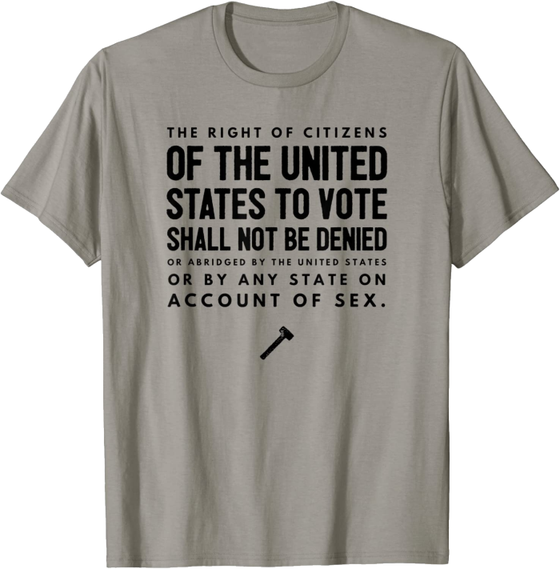

Women's Suffrage 19th Amendment Text T-Shirt

- Solid colors: 100% Cotton; Heather Grey: 90% Cotton, 10% Polyester; All Other Heathers: 50% Cotton, 50% Polyester
- Imported
- Machine Wash
- Celebrate 100 years of women's suffrage in America and the ratification of the Nineteenth Amendment to the United States Constitution on August 18, 1920.
- The right of citizens of the United States to vote shall not be denied or abridged by the United States or by any State on account of sex.
- Lightweight, Classic fit, Double-needle sleeve and bottom hem
- Buy on Amazon